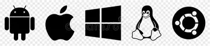

Retour à l'acceuil |
 Les Systèmes d'exploitation (Operating Systems) |
 Les Applications |
|
| Tout ce qui semble impossible reste à accomplir. -Jules Verne |
|||
|---|---|---|---|
Les logiciels utilitaires et les pilotes sont deux types de logiciels qui jouent un rôle important dans le bon fonctionnement d’un ordinateur. Même s’ils ont des fonctions différentes, ils travaillent tous les deux avec le système d’exploitation afin de rendre l’appareil plus efficace, plus sécuritaire et plus facile à utiliser. Les logiciels utilitaires sont des programmes conçus pour entretenir, optimiser ou protéger le système informatique. Ils permettent notamment de détecter des menaces, de libérer de l’espace de stockage, de gérer les fichiers, de créer des copies de sauvegarde et de repérer certains problèmes qui pourraient ralentir l’ordinateur. Par exemple, un antivirus protège l’appareil contre les virus et les logiciels malveillants, tandis qu’un logiciel de sauvegarde permet de conserver une copie des fichiers importants afin de pouvoir les récupérer en cas de perte ou de panne. Les pilotes, aussi appelés drivers, ont une fonction différente : ils permettent au système d’exploitation de communiquer avec les composants matériels de l’ordinateur et de les contrôler correctement. Chaque périphérique peut avoir besoin d’un pilote adapté pour fonctionner comme prévu. Par exemple, le pilote d’une imprimante permet à l’ordinateur de lui transmettre les informations nécessaires pour imprimer un document, tandis que le pilote d’une carte graphique aide le système à communiquer avec cette carte afin d’afficher les images, les vidéos et les jeux. D’autres périphériques, comme les claviers, les souris, les cartes son et les webcams, peuvent également utiliser des pilotes. Sans un pilote compatible, un périphérique risque de ne pas fonctionner ou de ne pas offrir toutes ses fonctionnalités. La principale différence entre ces deux types de logiciels est donc leur objectif : un utilitaire sert principalement à entretenir, à améliorer ou à protéger le système, alors qu’un pilote sert à établir la communication entre le système d’exploitation et un composant matériel. Les deux sont utiles, mais ils ne remplissent pas le même rôle.
Fonctionnement détaillé d’un logiciel utilitaire : l’antivirus
Un antivirus est un logiciel utilitaire dont le rôle principal est de protéger un ordinateur contre les virus et les autres formes de logiciels malveillants, comme les chevaux de Troie, les logiciels espions et certains programmes conçus pour voler des informations personnelles. Son fonctionnement se déroule en grande partie en arrière-plan, ce qui signifie qu’il peut protéger l’appareil sans que l’utilisateur ait besoin de lancer une analyse manuellement chaque fois qu’il ouvre un fichier ou télécharge un document. Lorsqu’un ordinateur démarre, l’antivirus peut activer sa protection en temps réel, qui surveille certaines activités du système afin de repérer les comportements suspects. Par exemple, lorsqu’un utilisateur télécharge un fichier sur Internet, ouvre une pièce jointe dans un courriel ou lance un programme, l’antivirus peut examiner le fichier pour déterminer s’il présente des signes de danger. Pour effectuer cette vérification, il peut comparer des éléments du fichier à des signatures connues de logiciels malveillants, c’est-à-dire des caractéristiques associées à des menaces déjà identifiées. Les antivirus modernes peuvent également utiliser des méthodes d’analyse plus avancées, comme l’analyse heuristique et l’observation du comportement des programmes. Ces méthodes permettent parfois de repérer une menace inconnue en examinant des actions suspectes, par exemple lorsqu’un programme tente de modifier de nombreux fichiers sans raison apparente ou d’accéder à des données sensibles de manière inhabituelle. Certains antivirus peuvent aussi utiliser des services infonuagiques pour obtenir des informations récentes sur les menaces et améliorer leur capacité de détection. Lorsqu’une menace est détectée, le logiciel peut bloquer son exécution, avertir l’utilisateur ou placer le fichier en quarantaine. La quarantaine consiste à isoler le fichier suspect et à empêcher son utilisation normale afin de limiter les risques pour le reste de l’ordinateur. Selon la situation, le logiciel peut également proposer de supprimer le fichier. En plus de la protection en temps réel, un antivirus permet généralement d’effectuer des analyses manuelles. Une analyse rapide vérifie les endroits où les menaces sont souvent présentes, tandis qu’une analyse complète examine une plus grande partie du système et peut prendre davantage de temps. Pour rester efficace, l’antivirus doit aussi recevoir des mises à jour qui lui permettent de reconnaître les nouvelles menaces et d’améliorer ses méthodes de détection. Un exemple concret est Microsoft Defender Antivirus, qui est intégré à Windows et qui surveille les fichiers et les programmes afin de détecter et de bloquer les menaces. Même si un antivirus offre une protection importante, il ne garantit pas une sécurité parfaite. Il est donc nécessaire de garder les logiciels à jour, d’utiliser des mots de passe sécuritaires, de faire attention aux liens suspects et de conserver des copies de sauvegarde des fichiers importants.
En conclusion, les logiciels utilitaires et les pilotes contribuent tous les deux au bon fonctionnement d’un ordinateur, mais de façons différentes : les utilitaires aident à maintenir le système en bon état et à le protéger, tandis que les pilotes assurent la communication entre le système d’exploitation et le matériel. L’antivirus illustre bien l’importance des logiciels utilitaires, puisqu’il travaille continuellement en arrière-plan pour repérer les menaces et réduire les risques pour les données de l’utilisateur.
Retour à l'acceuil |
 Les Systèmes d'exploitation (Operating Systems) |
Les Applications |
|
| Tout ce qui semble impossible reste à accomplir. -Jules Verne |
|||
|---|---|---|---|